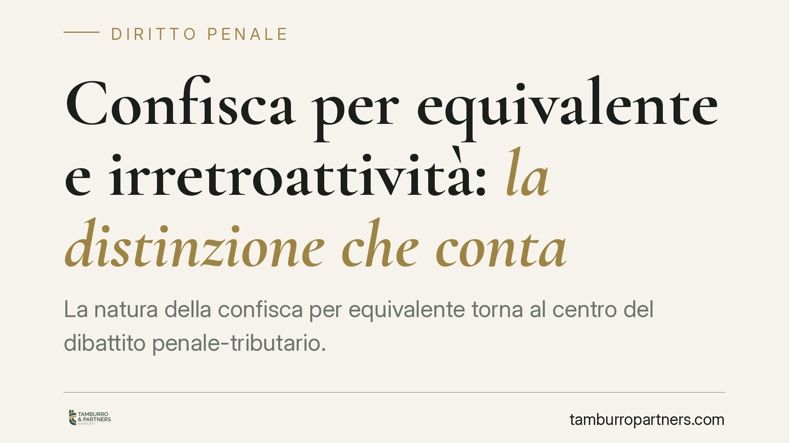

Confisca per equivalente e irretroattività: la distinzione che conta
La natura della confisca per equivalente torna al centro del dibattito penale-tributario. Quando una misura ha carattere afflittivo, un orientamento giurisprudenziale più sfavorevole non può colpire fatti commessi prima del suo consolidarsi. La distinzione tra confisca diretta e per equivalente, e il loro diverso rapporto con la prescrizione, resta decisiva per chi affronta un procedimento tributario.

Il nodo: due confische, due regimi
Nei reati tributari la confisca può assumere due forme che è bene non confondere.
La confisca diretta colpisce il profitto del reato così come si è materializzato: la somma risparmiata con l'evasione, se ancora rinvenibile nel patrimonio dell'imputato o riconducibile a quel profitto. Ha natura prevalentemente ripristinatoria, perché sottrae un vantaggio illecito concreto.
La confisca per equivalente interviene quando il profitto diretto non è più aggredibile: si colpiscono allora beni di valore corrispondente, anche del tutto estranei al reato. Proprio perché incide su beni leciti in misura pari al profitto, parte della giurisprudenza e della dottrina le attribuisce un carattere afflittivo, assimilabile a una sanzione.
Da questa diversa natura discende un diverso destino quando il reato si prescrive.
Inquadramento normativo
L'art. 578-bis c.p.p. consente al giudice dell'impugnazione, in caso di estinzione del reato per prescrizione o amnistia, di confermare la confisca già disposta, previo accertamento della responsabilità. La disposizione è stata introdotta per evitare che la prescrizione travolgesse automaticamente la misura ablatoria.
Il punto controverso riguarda l'applicabilità di questo meccanismo alla confisca per equivalente. La questione si intreccia con la natura della misura: se le si riconosce carattere sanzionatorio, entrano in gioco le garanzie dell'art. 7 CEDU e dell'art. 25, comma 2, Cost., che vietano l'applicazione retroattiva di un trattamento più sfavorevole. La Corte costituzionale e la giurisprudenza di legittimità hanno in più occasioni sottolineato il profilo afflittivo della confisca di valore, senza che si possa parlare di un quadro del tutto pacifico: il tema resta oggetto di confronto tra orientamenti.
Perché l'orientamento più sfavorevole non può retroagire
Il principio è lineare nella sua premessa. Se un indirizzo interpretativo rende più gravoso il trattamento riservato all'imputato, applicarlo a fatti commessi quando quell'indirizzo non esisteva o era di segno opposto solleva un problema di prevedibilità della sanzione.
Ne deriva una conseguenza concreta: per i fatti anteriori, quando il reato tributario si estingue per prescrizione, la confisca per equivalente — in quanto misura dal carattere afflittivo — può venire meno, mentre la confisca diretta, di natura ripristinatoria, tende a resistere. Non si tratta di un automatismo, ma di una lettura che valorizza la differente funzione delle due misure.
Resta aperta, sul piano processuale, la questione del concorso di cause di sospensione della prescrizione (art. 159 cod. pen.): quando il corso del termine è influenzato da più fattori, occorre verificare in concreto quale incida sul decorso. Si tratta di valutazione tecnica che va condotta caso per caso, senza affermazioni di principio generalizzanti.
Implicazioni pratiche
Per chi è coinvolto in un procedimento penale-tributario con misure ablatorie già disposte, la distinzione ha effetti tangibili.
Una confisca per equivalente disposta su beni leciti, relativa a fatti risalenti, può essere messa in discussione se il reato si prescrive e se la misura ha carattere afflittivo. La confisca diretta sul profitto, invece, segue regole più stringenti e sopravvive più facilmente all'estinzione del reato.
La data del fatto diventa quindi un dato dirimente, non un dettaglio formale: è il parametro per stabilire quale regime e quale orientamento siano applicabili.
Cosa fare in concreto
- Verifica la data del fatto contestato: è il riferimento per individuare l'orientamento applicabile e per valutare eventuali profili di irretroattività.
- Distingui le confische in atto: accerta se la misura disposta sia diretta o per equivalente, perché il regime e le prospettive difensive cambiano.
- Monitora il decorso della prescrizione: ricostruisci con precisione eventuali sospensioni e il loro effettivo impatto sul termine.
- Valuta un'istanza di revoca o riesame della confisca per equivalente quando ne ricorrano i presupposti, in particolare in caso di estinzione del reato.
- È opportuno sottoporre la posizione a valutazione tecnica prima di qualsiasi iniziativa, poiché gli esiti dipendono dalle circostanze del singolo caso.
La differenza tra confisca diretta e confisca per equivalente non è una sottigliezza accademica: incide sul patrimonio e sulle garanzie dell'imputato, e va analizzata alla luce della natura della misura e del momento in cui il fatto è stato commesso.
Contributo informativo a cura di Tamburro & Partners Avvocati. Non costituisce parere legale.
Ogni condominio ha una storia a sé.
Se gestisci un'amministrazione e vuoi un confronto su una specifica questione condominiale, scrivi allo studio. Ti rispondiamo entro un giorno lavorativo.